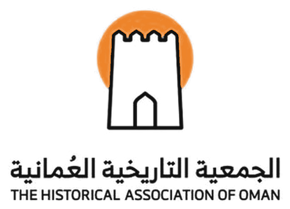

تاريخ عُمان، رقمياً
مشاريع تفاعلية من الجمعية التاريخية العُمانية تقرّب تاريخ عُمان من الطلاب ومحبي التاريخ: حوار مع الأعلام، وتقويم للأحداث، وأرشيف لأصوات كبار السن.
مجلس التاريخ العُماني
أكثر من مئتين وعشرين علَماً من الأئمة والسلاطين والعلماء والشعراء والعالمات، وأحداث عُمان الكبرى من مجان إلى اليوم.
ادخل المجلس ← تقويمحدث في مثل هذا اليوم
محطات مؤرخة باليوم مع التاريخ الهجري، وبطاقة جاهزة للنشر على حسابات الجمعية.
افتح التقويم ← أرشيف صوتيذاكرة عُمان الصوتية
حكايات كبار السن بأصواتهم ونصوصها، مرتبة حسب المحافظة والموضوع.
استمع للأرشيف ← دليل بحثيمصادر عُمان في العالم
كتب تراثية مرقمنة، وما كتبه الرحالة عن عُمان، وأرشيفات عشر دول تحفظ وثائق عُمانية.
افتح الدليل ←227علَماً عُمانياً
52من العالمات والرائدات
42حدثاً في المجلس
7عصور من التاريخ